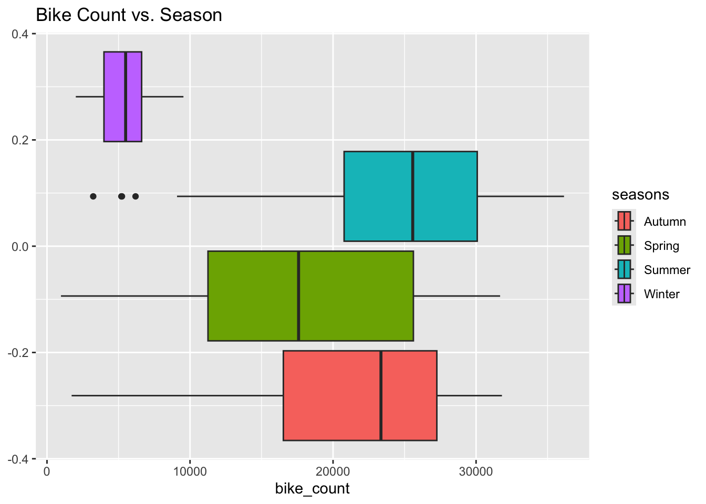
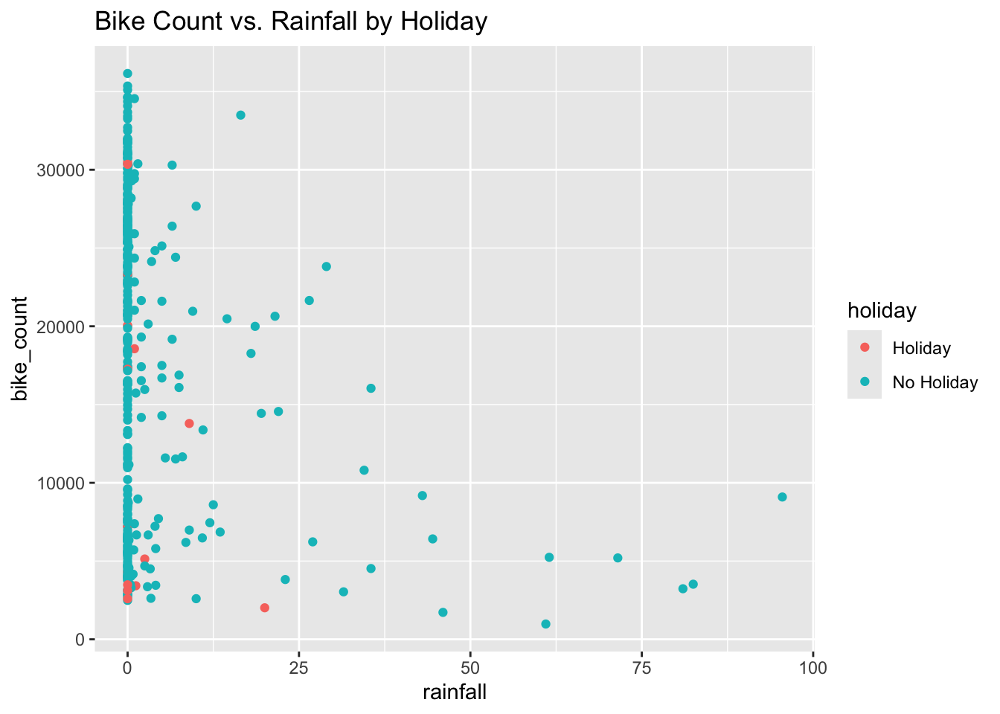
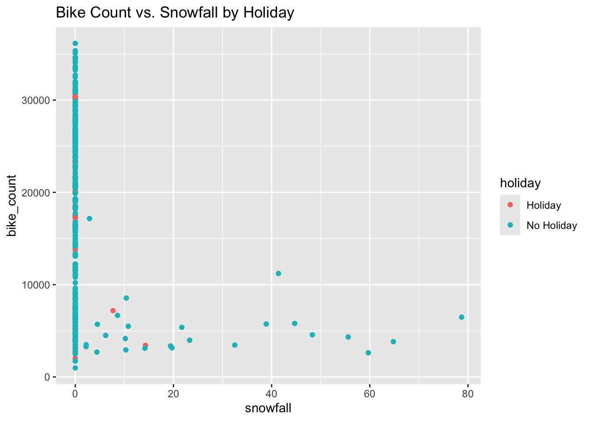
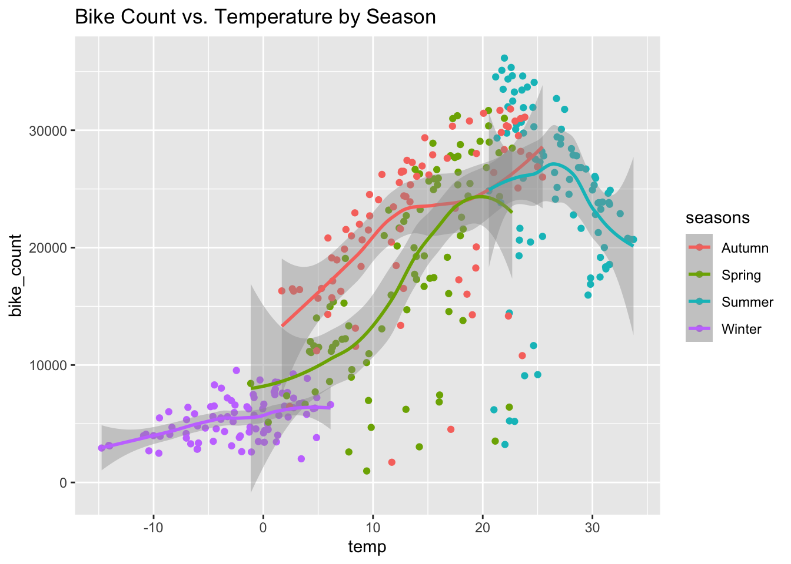

Before we can start modeling, we need to examine our data and identify any important relationships.
EDA
Starting with reading in the data, R freaks out that there’s a degree symbol in one of the column names. I’m avoiding reading the header and instead manually renaming the columns since we’d want to do this anyways.
`summarise()` has regrouped the output.
ℹ Summaries were computed grouped by holiday, seasons, and functioning_day.
ℹ Output is grouped by holiday and seasons.
ℹ Use `summarise(.groups = "drop_last")` to silence this message.
ℹ Use `summarise(.by = c(holiday, seasons, functioning_day))` for per-operation
grouping (`?dplyr::dplyr_by`) instead.
`summarise()` has regrouped the output.
ℹ Summaries were computed grouped by date, seasons, and holiday.
ℹ Output is grouped by date and seasons.
ℹ Use `summarise(.groups = "drop_last")` to silence this message.
ℹ Use `summarise(.by = c(date, seasons, holiday))` for per-operation grouping
(`?dplyr::dplyr_by`) instead.
date seasons bike_count rainfall
Min. :2017-12-01 Autumn:81 Min. : 977 Min. : 0.000
1st Qu.:2018-02-27 Spring:90 1st Qu.: 6967 1st Qu.: 0.000
Median :2018-05-28 Summer:92 Median :18563 Median : 0.000
Mean :2018-05-28 Winter:90 Mean :17485 Mean : 3.576
3rd Qu.:2018-08-24 3rd Qu.:26285 3rd Qu.: 0.500
Max. :2018-11-30 Max. :36149 Max. :95.500
snowfall temp humidity wind
Min. : 0.000 Min. :-14.738 Min. :22.25 Min. :0.6625
1st Qu.: 0.000 1st Qu.: 3.304 1st Qu.:47.58 1st Qu.:1.3042
Median : 0.000 Median : 13.738 Median :57.17 Median :1.6583
Mean : 1.863 Mean : 12.776 Mean :58.17 Mean :1.7261
3rd Qu.: 0.000 3rd Qu.: 22.592 3rd Qu.:67.71 3rd Qu.:1.9542
Max. :78.700 Max. : 33.742 Max. :95.88 Max. :4.0000
visibility dew_point solar_rad
Min. : 214.3 Min. :-27.750 Min. :0.02917
1st Qu.:1087.0 1st Qu.: -5.188 1st Qu.:0.28333
Median :1557.8 Median : 4.612 Median :0.56500
Mean :1434.0 Mean : 3.954 Mean :0.56773
3rd Qu.:1874.3 3rd Qu.: 14.921 3rd Qu.:0.82000
Max. :2000.0 Max. : 25.038 Max. :1.21667
Removing non-functioning days definitely affected the summary statistics. Aggregating rainfall and bike count seems to better reflect their tendencies. We can check how the grouped statistics are affected:
`summarise()` has regrouped the output.
ℹ Summaries were computed grouped by holiday and seasons.
ℹ Output is grouped by holiday.
ℹ Use `summarise(.groups = "drop_last")` to silence this message.
ℹ Use `summarise(.by = c(holiday, seasons))` for per-operation grouping
(`?dplyr::dplyr_by`) instead.
Compared to the previous grouped summary statistics, we see a greater delta between holidays and non-holidays, especially for the spring and winter seasons. This suggests there might be merit to adding an interaction term to our model.
Next, we’ll create some BASIC (no time for labeling) plots so we can visually investigate these relationships:
library(ggplot2)# bike rentals by seasonp1 <-ggplot(bike_rentals, aes(x = bike_count, fill = seasons)) +geom_boxplot() +labs(title ="Bike Count vs. Season")# bike rentals by rainfall (by holiday)p2 <-ggplot(bike_rentals, aes(x = rainfall, y = bike_count, color = holiday)) +geom_point() +labs(title ="Bike Count vs. Rainfall by Holiday")# bike rentals by snowfall (by holiday)p3 <-ggplot(bike_rentals, aes(x = snowfall, y = bike_count, color = holiday)) +geom_point() +labs(title ="Bike Count vs. Snowfall by Holiday")# bike rentals by temperaturep4 <-ggplot(bike_rentals, aes(x = temp, y = bike_count, color = seasons)) +geom_point() +geom_smooth() +labs(title ="Bike Count vs. Temperature by Season")p1

The boxplot shows clearly that bike rentals are lowest in the winter. Spring has the widest variation in bike rentals, while summer appears to have the most symmetric distribution of bike rentals.
Next, we look at rainfall and snowfall:
p2

p3

Both metrics are loosely associated with bike rentals. Rainfall seems to have a moderately strong, negative association with the number of bike rentals. Snowfall has a weak correlation.
Finally, we’ll take a look at the relationship between temperature and bike rentals:
p4
`geom_smooth()` using method = 'loess' and formula = 'y ~ x'

This plot shows a generally positive relationship between temperature and bike rentals, although there is a point where this relationship inverts (20 degrees C in spring, 27 degrees C in summer).
Lastly, we’ll measure the association between numeric variables by their correlation:
We partition the data into a 75/25 train/test split, stratified by season to provide even coverage. Then, we create a 10 fold CV split on the training set.
Our first recipe will create a “weekend” true/false flag to use in our model. We also normalize the numeric predictors and create dummy variables for our categorical predictors.
We’re ready to fit the models! First, we need to specify the type and engine for the model. After that, we create the workflows using the recipes we created earlier.
# define model and enginebike_mod <-linear_reg() |>set_engine("lm")# create workflows 1-3bike_wf1 <-workflow() |>add_recipe(rec_1) |>add_model(bike_mod)bike_wf2 <-workflow() |>add_recipe(rec_2) |>add_model(bike_mod)bike_wf3 <-workflow() |>add_recipe(rec_3) |>add_model(bike_mod)# fit models to training databike_fit1 <-fit_resamples( bike_wf1,resamples = bike_folds )
→ A | warning: prediction from rank-deficient fit; consider predict(., rankdeficient="NA")
→ A | warning: prediction from rank-deficient fit; consider predict(., rankdeficient="NA")
We can get the training loss metrics with collect_metrics():
collect_metrics(bike_fit1)
# A tibble: 2 × 6
.metric .estimator mean n std_err .config
<chr> <chr> <dbl> <int> <dbl> <chr>
1 rmse standard 4135. 10 119. pre0_mod0_post0
2 rsq standard 0.827 10 0.00916 pre0_mod0_post0
collect_metrics(bike_fit2)
# A tibble: 2 × 6
.metric .estimator mean n std_err .config
<chr> <chr> <dbl> <int> <dbl> <chr>
1 rmse standard 3087. 10 172. pre0_mod0_post0
2 rsq standard 0.904 10 0.0102 pre0_mod0_post0
collect_metrics(bike_fit3)
# A tibble: 2 × 6
.metric .estimator mean n std_err .config
<chr> <chr> <dbl> <int> <dbl> <chr>
1 rmse standard 2949. 10 153. pre0_mod0_post0
2 rsq standard 0.912 10 0.00855 pre0_mod0_post0
Looking at the output, the first model has the lowest RMSE and standard error so it’s our final model.
Fitting the Final Model
Lastly, we fit the final model to the entire training set and extract the test RMSE:
final_fit <- bike_wf1 |>last_fit(bike_split)
→ A | warning: prediction from rank-deficient fit; consider predict(., rankdeficient="NA")
collect_metrics(final_fit)
# A tibble: 2 × 4
.metric .estimator .estimate .config
<chr> <chr> <dbl> <chr>
1 rmse standard 4137. pre0_mod0_post0
2 rsq standard 0.835 pre0_mod0_post0
Our final model has a test RMSE of 4255, which is slightly higher than the test CV RMSE for this model. We can obtain the predicted coefficients with extract_fit_parsnip: